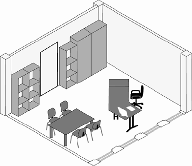
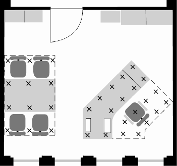

(1) Beleuchtungsanlagen sind so einzurichten und zu betreiben, dass sie die Sicherheit und die Gesundheit der Beschäftigten nicht gefährden. Diesbezüglich auftretende Mängel sind unverzüglich zu beseitigen.
Mängel können z. B. sein:
(2) Bei Veränderungen von Arbeitsplätzen (z. B. geänderte Aufstellung von Schreibtischen, Veränderung von Farben und Oberflächen) oder Änderungen der Sehaufgabe (z. B. Umstellung der Produktion oder der Tätigkeit) ist im Rahmen der Gefährdungsbeurteilung zu prüfen, ob die Beleuchtungsanlage den geänderten Bedingungen entspricht oder angepasst werden muss.
(1) Beleuchtungsanlagen sind regelmäßig dahingehend zu überprüfen, ob sie noch den Anforderungen dieser Arbeitsstättenregel entsprechen. Im Laufe der Zeit unterliegen Beleuchtungsanlagen einer Veränderung der lichttechnischen Parameter (z. B. Verringerung der Beleuchtungsstärke) oder sie können beschädigt werden. Instandhaltungsmaßnahmen sind spätestens dann erforderlich, wenn die Beleuchtungsanlage durch Verschmutzung, Alterung oder Beschädigung die Anforderungen dieser ASR nicht mehr erfüllt oder auf andere Weise zu einer Gefährdung wird. Es ist dafür zu sorgen, dass sichere Instandhaltung möglich ist, insbesondere ist für einen sicheren Zugang zu sorgen.
(2) Um die Versorgung mit Tageslicht nicht zu beeinträchtigen, sind Fenster und Dachoberlichter regelmäßig zu reinigen. Anforderungen an den Arbeitsschutz bei der Reinigung von Fensterflächen siehe ASR A1.6 "Fenster, Oberlichter, lichtdurchlässige Wände".
(1) Sofern zur Auswahl oder zur Prüfung von Beleuchtungseinrichtungen orientierende Messungen im Betrieb durchgeführt werden, sind Beleuchtungsstärkemessgeräte zu verwenden, die mindestens der Klasse C gemäß DIN 5035 Teil 6, Ausgabe 2006-11 entsprechen.
(2) Die Messungen der künstlichen Beleuchtung in Räumen, die auch durch Tageslicht beleuchtet werden, sollen bei natürlicher Dunkelheit durchgeführt werden. Kann Tageslicht bei der Messung nicht ausgeschlossen werden, ist zunächst bei eingeschalteter und danach bei ausgeschalteter künstlicher Beleuchtung zu messen. Aus der Differenz der beiden Messungen werden die Werte der künstlichen Beleuchtung ermittelt. Da das Tageslicht stark schwanken kann, sollten die beiden Messungen bei bedecktem Himmel und unmittelbar nacheinander durchgeführt werden. Die Differenzmessung ist bei tageslichtabhängig geregelten Beleuchtungsanlagen nicht anwendbar.
(3) Zur Bewertung des Ist-Zustandes sind die Beleuchtungsanlagen im jeweiligen Betriebszustand zu messen. Leuchtstofflampen und andere Entladungslampen müssen bei der Messung mindestens 100 Betriebsstunden aufweisen.
(4) Die Messpunkte sind auf der Bezugsebene möglichst gleichmäßig zu verteilen (siehe Abb. 4).


Abb. 4: Beispiel für die Verteilung der Messpunkte (x) für einen Bereich des Arbeitsplatzes
(5) Der Mindestwert der Beleuchtungsstärke muss in der Bezugsebene (siehe Tabelle 1) erreicht werden und wird auch dort gemessen. Ist die Höhe oder Ebene bekannt, in der die Sehaufgabe ausgeführt wird, kann die Messung auch dort durchgeführt werden.
Tabelle 1: Höhe der Bezugsebenen für horizontale Beleuchtungsstärken Eh und vertikale Beleuchtungsstärken Ev
| Bezugshöhe für Eh [m über dem Boden] | Bezugshöhe für Ev [m über dem Boden] | |
| überwiegend stehende Tätigkeiten | 0,85 | 1,60 |
| überwiegend sitzende Tätigkeiten | 0,75 | 1,20 |
| Verkehrswege (z. B. Flure und Treppen) | bis 0,20 |
(1) Sicherheitsbeleuchtung ist an die aktuelle Gefährdungssituation anzupassen. Schäden, die die Funktionsfähigkeit beeinträchtigen können, sind unverzüglich zu beseitigen.
(2) Der Arbeitgeber hat die Sicherheitsbeleuchtung bei Bedarf auf seine Funktionsfähigkeit prüfen zu lassen. Die Wartungs-, Prüf- und Dokumentationspflichten ergeben sich aus der Gefährdungsbeurteilung unter Berücksichtigung der Herstellerangaben. Festgestellte Mängel sind unverzüglich sachgerecht zu beseitigen.